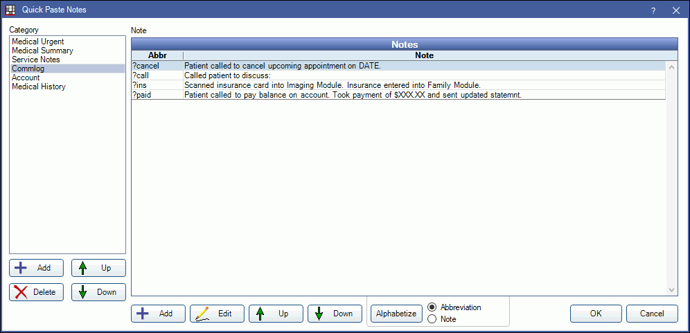

Quick Paste Notes Setup
Organize and create new quick paste notes and categories from this window.
In the Main Menu, click Setup, Quick Paste Notes.
Alternatively, right-click in a Right Click Text Box that supports quick notes and select Insert Quick Paste Note.
Category: Notes can be organized by category. The buttons below the list are specific to categories.
- Add: Add a new category. See Quick Paste Category.
- Delete: Delete the selected category, along with all quick paste notes within the category.
- Up / Down: Organize the list by moving a category up or down the list.
- Double-click a category to edit the name or default types.
The buttons along the bottom pertain to the notes within the selected category.
- Add: Add a new quick paste note. See Quick Paste Note Edit.
- Edit: Edit the selected quick paste note.
- Up / Down: Organize the quick paste notes by moving them or down the list.
- Alphabetize: Organize the quick paste notes in alphabetical order. Notes can be organized by Abbreviation or Note.
Using Quick Paste Notes
To use quick paste notes, follow the steps below:
- Create a Quick Paste Note.
- Click Add on the left to create a new category, or highlight an existing category. The selected category will determine which areas the Quick Paste Note will work.
- Click Add at the bottom to create a new note, or highlight an existing note and click Edit.
- Enter the quick paste note when entering text into a supported area (e.g., procedure notes, commlogs, etc).
- Enter ? followed by the abbreviation to enter the pretedermined note. (e.g., Enter ?cancel to enter the note Patient cancelled upcoming appointment.).
- Alternatively, in supported areas right-click can be used to insert a quick paste note. Right-click the text area, select Insert Quick Paste Note, choose a note to add from the list. Click OK.